The clear trend is that artificial intelligence
(AI) and machine learning
(ML) are current hot topics, particularly in wireless networks and signal processing. Another active research topic is stochastic geometry
(SG). In this regard, some perceive SG and ML as competitors, suggesting ML has surpassed SG in practical impact. However, this comparison is a poor perspective and not the only way to look at it. The ongoing SG research remains valuable, beyond being an academic exercise. SG can and will be utilised in modern ML by providing models and, further, hypothesis classes of models for ML algorithms. In this post, we will introduce some of the most recent advancements in SG modelling of satellite communication systems and provide a concrete example of its application in ML.
For instance, SG models can be integrated as a hypothesis class in the learning process of ML.
— Yassine H Mamouche et al., [1].
Figure:
Image generated with the help of DALL-E, an AI by OpenAI.
|
Let us formulate the working definitions of the ML and SG. We focus on the signal processing of wireless networks, particularly interference modelling.
-
SG encompasses stochastic models of wireless networks, allowing the investigation of many statistical properties, such as interference power distribution and coverage. These expressions are usually presented in mathematical form; tractable, closed-form formulas are the most insightful and useful.
- ML encompasses learning algorithms that ultimately utilise empirical raw data, and they are powerful tools for signal interpolation and prediction. The results are usually numerical.
The landscape of ML algorithms is vast; however, they are often based on Gaussian process regression
(GPR). GPR is a signal prediction method that relies on estimating the signal from a set of samples (or observations) and a correlation
function. More specifically, an autocovariance
function (also referred to as a kernel) is at the heart of GPR. The autocovariance function can be arbitrary, and it should be carefully chosen to get meaningful results. One way is to numerically estimate the autocovariance from training data. Whether the training data is empirical data from an actual system or generated synthetically using simulation tools, numerical statistical estimates lack generality and physical insight and have a concomitant dependence on local, empirical data and circumstances. How to interpret such data if we don't have understand what qualities we are looking for? It is time for the SG to step into the arena: A comprehensive, tractable, and solid wireless network SG system model provides ML models that guide us effectively in inferring patterns from empirical data.
We will demonstrate an example of estimating the power of a non-stationary Gaussian interference signal at a low Earth orbit
(LEO) satellite receiver. The estimation is based on the GPR and a theoretical SG model of the interference power distribution and its autocovariance function. The results are compared with a moving average
(MA).
The theoretical settings are
- The interferers (natural sources or transmitters) of bandwidth
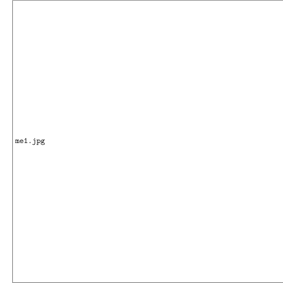
kHz are distributed according to the Poisson point process
(PPP) on the Earth surface with a density
 km
km , causing interference at the LEO satellite. Each interferer transmits at power
, causing interference at the LEO satellite. Each interferer transmits at power 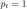
.
- The LEO satellite has a narrow antenna pattern with a half-power (
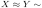
dB) beamwidth
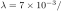
rad, steered toward the Earth's center. This means the beam center elevation angle w.r.t the satellite is
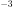
rad.
- The LEO satellite is at
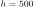
km moving at its orbital speed
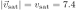
km/s.
- We model Rician fast fading
with the Rician parameter
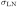
, which is the ratio between the power in the direct path and the power in the other, scattered, paths. No shadowing, cloud attenuation, or similar are modelled.
As the satellite moves, the magnitude of the aggregate interference from the randomly distributed interferers varies. A rigorous analysis of the interference statistics is presented in my thesis [2]
and in article [4], where the results are validated against a realistic Monte Carlo simulation model.
The key insights acquired from the SG analysis are as follows.
Figure:
A sketch of the system model.
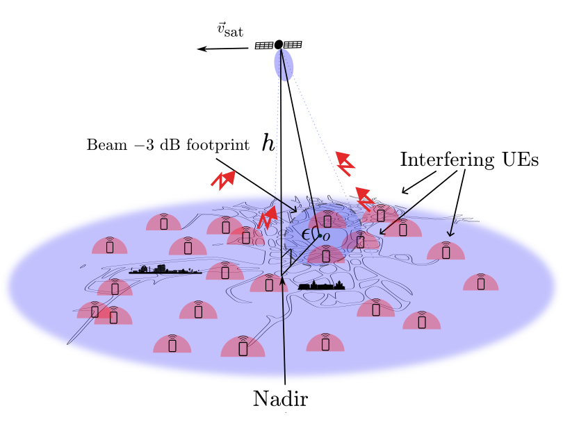 |
- 5.
- Under fairly general settings (for example, assuming a Gaussian waveform for each interferer), the interference waveform at the LEO satellite can be modelled as
where 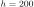
is a zero-mean Gaussian waveform with
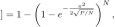
, which is modulated by the power 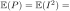
(see [2], Section 3.4).
- 6.
- The autocovariance
![$K_P(\tau) \triangleq \mathbb{E}\left[(P(t)-\mathbb{E}(P(t)))(P(\tau-t)-\mathbb{E}(P(\tau-t)))\right]$](img15.svg) of
of 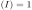
at lag 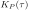
has the Gaussian form
|
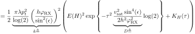 |
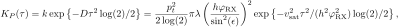 |
|
|
|
 |
|
 is an i.i.d. deterministic or random fading gain of the typical transmitter. The Gaussian left-hand-side term corresponds to satellite movement and antenna attenuation of the interferers, and the right-hand-side term corresponds to the fading component. The fading autocovariance is modelled using a triangular function with coherence time
is an i.i.d. deterministic or random fading gain of the typical transmitter. The Gaussian left-hand-side term corresponds to satellite movement and antenna attenuation of the interferers, and the right-hand-side term corresponds to the fading component. The fading autocovariance is modelled using a triangular function with coherence time 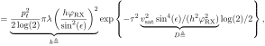
(fading gain separated by a time interval greater than is uncorrelated). The parameters 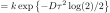
are constants that depend on
 ,
,  ,
, 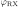
,  ,
,
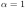
, and 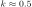
(analogous derivation for the amplitude in [2], Section 4.2, and for the Pearson correlation coefficient [4], Eq. (21)).
- 7.
- The normalised interference power is approximately gamma distributed
with the mean
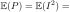
var
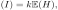
and the variance
(See [4], Eqs. (18), (19) and (29)).
Waveform model 5, correlation model 6, and gamma distribution model 7 define a ML hypothesis class in which the latent variable encodes information about coherence time, fading conditions, transmission powers, and interferer density. This process is computationally efficient to generate and will serve as a prior model for training the ML algorithm and for inferring the received signal waveform data. If left unfixed,  ,
, 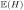
,
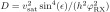
,
 ,
var
,
var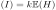
, and are hyperparameters
learned from the data in the machine learning process. In the correlation model, too large or too small or 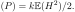
yields overfitting
and underfitting, respectively.
In the following, we are interested in the coherence time and multipath fading parameter.
Figure:
1) Rice- fading (var
fading (var
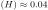
) with
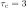
s: The observed waveform and posterior distributions.
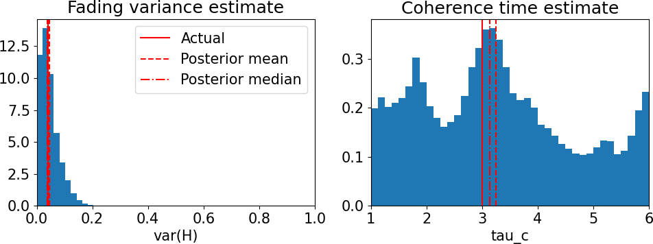 |
In Figures 1 and 2, we estimate the channel conditions from a sampled 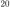
Hz interference signal by using simulation-based inference and the Neural Posterior Estimation algorithm (NPE-C) [4]. The “actual” signal and training data are generated synthetically following the distribution properties 5-7 (i.e., not by simulating the PPP). We are only interested in the second-order fading statistics (not, for example, the interferer density or the transmitting powers); hence, without loss of generality, the parameters can be fixed at the values 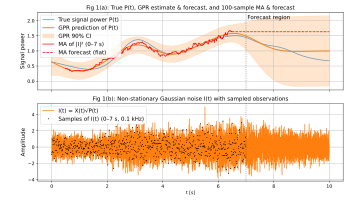
and
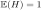
in the autocovariance model 6. Furthermore, for model parameters 2 and 3,
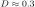
. Consequently, we are left with the unknown parameters var and . Considering Rician fading, the variance of 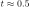
directly determines the Rician parameter by the equation
with
var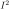
corresponding to pure line-of-sight (LoS) and pure multipath (Rayleigh) fading
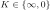
, respectively. The inference is based on the property that the autocovariances of and  coincide for non-zero lags. The prior distributions for var and are uniform on
coincide for non-zero lags. The prior distributions for var and are uniform on 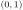
and 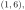
respectively.
Figure:
2) Rice- fading (var
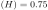
) with
s: The observed waveform and posterior distributions.
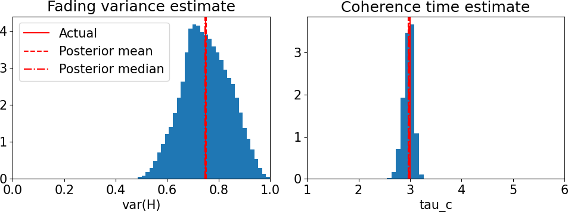 |
In Figure 1, one can observe that the coherence time is hard to estimate when the Rician parameter is large (var is small). However, the fading variance estimate is less spread. On the other hand, small Rician parameters seem to produce highly accurate coherence estimates, as shown in Figure 2. Both estimates improve with larger training data sets and/or by optimising the estimation method.
The following Python code uses the sbi [6] and PyTorch [7] packages and estimates the channel hyperparameters from an observed signal, similar to Figures 1 and 2. (Written with the help of AI.)
import math
from dataclasses import dataclass
import numpy as np
import torch
import pickle
import matplotlib.pyplot as plt
from scipy.special import ndtr
from scipy.stats import gamma as scipy_gamma
from sbi.inference import NPE_C
from sbi.inference import NRE_C
from sbi.inference import NLE_A
from sbi.utils import BoxUniform
from pytictoc import TicToc
# ============================================================
# Configuration
# ============================================================
@dataclass
class ModelConfig:
# Known model parameters
H_m1: float
D: float
k: float
# Time discretization
T: int
dt: float
# Numerics
device: str = "cpu"
eps: float = 1e-8
jitter: float = 1e-12
# ============================================================
# Model functions
# ============================================================
def triangle_kernel(x: torch.Tensor) -> torch.Tensor:
return torch.clamp(1.0 - torch.abs(x), min=0.0)
def autocov_P_lags(lags: torch.Tensor, var_H: float, tau_c: float, cfg: ModelConfig) -> torch.Tensor:
"""
Theoretical autocovariance of P:
C_P(tau) = k/2 * [ H_m1^2 exp(-tau^2 D log(2)/2) + var_H * triang(tau/tau_c) ]
"""
exp_term = cfg.H_m1**2 * torch.exp(-(lags**2) * cfg.D * math.log(2) / 2.0)
if tau_c <= cfg.eps:
tri_term = torch.zeros_like(lags)
tri_term[0] = 1.0
else:
tri_term = triangle_kernel(lags / tau_c)
return (cfg.k / 2.0) * (exp_term + var_H * tri_term)
def gamma_shape_scale_from_mean_var(mean: float, var: float):
"""
Gamma(shape=alpha, scale=theta) from mean and variance.
"""
alpha = mean**2 / var
theta = var / mean
return alpha, theta
# ============================================================
# Corrected FFT / circulant Gaussian sampler
# ============================================================
def make_first_row_circulant_from_acf(acf: torch.Tensor) -> torch.Tensor:
"""
Build first row of circulant embedding:
[r0, r1, ..., r_{T-1}, r_{T-2}, ..., r1]
"""
T = len(acf)
if T == 1:
return acf.clone()
return torch.cat([acf, torch.flip(acf[1:-1], dims=[0])])
def sample_gaussian_process_circulant(acf: torch.Tensor, device="cpu", jitter=1e-12) -> torch.Tensor:
"""
Sample a real-valued stationary Gaussian process with target autocovariance/acf
using circulant embedding.
acf: tensor of shape [T] containing covariance/correlation at lags 0..T-1
returns: tensor of shape [T]
"""
acf = acf.to(device)
T = len(acf)
if T == 1:
return torch.sqrt(torch.clamp(acf[0], min=0.0)) * torch.randn(1, device=device)
c = make_first_row_circulant_from_acf(acf)
n = len(c)
lam = torch.fft.fft(c).real
lam = torch.clamp(lam, min=0.0) + jitter
eps = torch.randn(n, device=device)
z = torch.fft.fft(eps)
y = torch.fft.ifft(torch.sqrt(lam).to(torch.complex64) * z).real
return y[:T]
# ============================================================
# Sample latent gamma process P(t)
# ============================================================
def sample_P_process_fft(var_H: float, tau_c: float, cfg: ModelConfig) -> torch.Tensor:
"""
Approximate gamma process:
1) Build target covariance of P
2) Normalize to correlation
3) Sample latent Gaussian process by FFT/circulant embedding
4) Transform to gamma marginal by Gaussian copula
"""
lags = torch.arange(cfg.T, dtype=torch.float32, device=cfg.device) * cfg.dt
cov_P = autocov_P_lags(lags, var_H, tau_c, cfg)
varP = cov_P[0].item()
corr = cov_P / max(varP, cfg.eps)
corr[0] = 1.0
z = sample_gaussian_process_circulant(corr, device=cfg.device, jitter=cfg.jitter)
u = ndtr(z.detach().cpu().numpy())
u = np.clip(u, 1e-10, 1 - 1e-10)
alpha, theta = gamma_shape_scale_from_mean_var(cfg.H_m1, varP)
p = scipy_gamma.ppf(u, a=alpha, scale=theta)
return torch.tensor(p, dtype=torch.float32, device=cfg.device)
# ============================================================
# Signal simulator
# ============================================================
def simulate_I(theta: torch.Tensor, cfg: ModelConfig) -> torch.Tensor:
"""
theta = [var_H, tau_c]
returns one realization I(t) of shape [T]
"""
var_H = float(theta[0].item())
tau_c = float(theta[1].item())
P = sample_P_process_fft(var_H, tau_c, cfg)
X = torch.randn(cfg.T, device=cfg.device)
I = torch.sqrt(torch.clamp(P, min=cfg.eps)) * X
return I, P
def make_simulator(cfg: ModelConfig):
def simulator(theta: torch.Tensor) -> torch.Tensor:
return simulate_I(theta, cfg)[0]
return simulator
# ============================================================
# Corrected summary statistics for SBI
# ============================================================
def summarize_signal_I2_autocov(I: torch.Tensor, cfg: ModelConfig, num_acf_lags: int = 20) -> torch.Tensor:
"""
Summary statistics based on I^2.
IMPORTANT:
- We EXCLUDE lag 0 from the autocovariance summary.
- We center I^2 by the known theoretical mean E[I^2] = H_m1.
Output summary:
[ mean(I^2),
autocov_I2(lag=1),
autocov_I2(lag=2),
...
autocov_I2(lag=num_acf_lags) ]
"""
I = I.flatten()
I2 = I**2
feats = [I2.mean()]
centered = I2 - cfg.H_m1
T = len(I2)
max_lag = min(num_acf_lags, T - 1)
for lag in range(1, max_lag + 1):
cov = (centered[:-lag] * centered[lag:]).mean()
feats.append(cov)
return torch.stack(feats)
# ============================================================
# SBI training
# ============================================================
def train_sbi(
cfg: ModelConfig,
prior_low: torch.Tensor,
prior_high: torch.Tensor,
num_simulations: int = 5000,
summary_lags: int = 20,
):
"""
Train SNPE using corrected I^2-based summaries.
Returns:
posterior, inference, prior
"""
device = cfg.device
prior = BoxUniform(low=prior_low.to(device), high=prior_high.to(device))
simulator = make_simulator(cfg)
theta_sims = prior.sample((num_simulations,))
x_sims = []
for theta in theta_sims:
I = simulator(theta)
x = summarize_signal_I2_autocov(I, cfg, num_acf_lags=summary_lags)
x_sims.append(x)
x_sims = torch.stack(x_sims)
inference = NPE_C(prior=prior, density_estimator="nsf")
# inference = NLE_A(prior=prior, density_estimator="nsf")
# inference = NRE_C(prior=prior)
density_estimator = inference.append_simulations(theta_sims, x_sims).train()
posterior = inference.build_posterior(density_estimator)
return posterior, inference, prior
# ============================================================
# Inference on one observed realization
# ============================================================
def infer_parameters(
posterior,
I_obs: torch.Tensor,
cfg: ModelConfig,
summary_lags: int = 20,
num_posterior_samples: int = 3000,
):
"""
Infer posterior samples and point estimates for one observed signal.
"""
x_obs = summarize_signal_I2_autocov(I_obs, cfg, num_acf_lags=summary_lags)
samples = posterior.sample((num_posterior_samples,), x=x_obs)
return {
"samples": samples,
"mean": samples.mean(dim=0),
"median": samples.median(dim=0).values,
"std": samples.std(dim=0),
"x_obs_summary": x_obs,
}
# ============================================================
# Optional diagnostics
# ============================================================
def empirical_autocovariance_known_mean(x: torch.Tensor, mean_value: float, max_lag: int) -> torch.Tensor:
"""
x shape: [N, T]
empirical autocovariance using known theoretical mean.
"""
N, T = x.shape
xc = x - mean_value
acov = []
for lag in range(max_lag + 1):
vals = xc[:, :T-lag] * xc[:, lag:]
acov.append(vals.mean())
return torch.stack(acov)
def autocov_I2_lags(lags: torch.Tensor, var_H: float, tau_c: float, cfg: ModelConfig) -> torch.Tensor:
"""
Theoretical autocovariance of I^2(t).
For tau > 0:
Cov(I^2(t), I^2(t+tau)) = Cov(P(t), P(t+tau)) = C_P(tau)
For tau = 0:
Var(I^2) = 3 Var(P) + 2 E[P]^2 = 3 C_P(0) + 2 H_m1^2
"""
cP = autocov_P_lags(lags, var_H, tau_c, cfg).clone()
cI2 = cP.clone()
cI2[0] = 3.0 * cP[0] + 2.0 * (cfg.H_m1 ** 2)
return cI2
def diagnostic_compare_I2(
theta_true: torch.Tensor,
cfg: ModelConfig,
num_realizations: int = 1000,
max_lag: int = 30,
):
"""
Diagnostic: compare empirical I^2 autocovariance with theoretical I^2 autocovariance.
"""
var_H = float(theta_true[0].item())
tau_c = float(theta_true[1].item())
I_sims = []
for _ in range(num_realizations):
I_sims.append(simulate_I(theta_true, cfg)[0])
I_sims = torch.stack(I_sims)
I2_sims = I_sims**2
lags = torch.arange(max_lag + 1, dtype=torch.float32) * cfg.dt
th = autocov_I2_lags(lags.to(cfg.device), var_H, tau_c, cfg).cpu()
emp = empirical_autocovariance_known_mean(I2_sims, cfg.H_m1, max_lag=max_lag).cpu()
plt.figure(figsize=(8, 4))
plt.plot(lags.numpy(), th.numpy(), label="Theoretical autocov I^2", lw=2)
plt.plot(lags.numpy(), emp.numpy(), "--", label="Empirical autocov I^2", lw=2)
plt.xlabel("Lag time")
plt.ylabel("Autocovariance")
plt.title("Diagnostic: I^2 autocovariance")
plt.legend()
plt.tight_layout()
plt.show()
# ============================================================
# Demo
# ============================================================
def demo():
cfg = ModelConfig(
H_m1=1.0,
D=0.3,
k=1.0,
T=2**16, # T is a power of 2 for fast FFT
dt=0.05,
device="cpu",
)
maxlaginsec = 7.0
# Prior on [var_H, tau_c]
prior_low = torch.tensor([0.0, 1.0], dtype=torch.float32)
prior_high = torch.tensor([1.0, 6.0], dtype=torch.float32)
timer.tic()
num_simulations = 100000
# Train posterior
# posterior, inference, prior = train_sbi(
# cfg=cfg,
# prior_low=prior_low,
# prior_high=prior_high,
# num_simulations=num_simulations,
# summary_lags=int(maxlaginsec / cfg.dt) + 1,
# )
# timer.toc()
# with open("my_posterior100000.pkl", "wb") as handle: # Save the training
# pickle.dump(posterior, handle)
# with open("my_posterior100000.pkl", "rb") as handle: # Load an existing training
# posterior = pickle.load(handle)
# One synthetic observed dataset
theta_true1 = torch.tensor([0.04, 3.0], dtype=torch.float32)
I_obs1, P_obs1 = simulate_I(theta_true1, cfg)
I21 = I_obs1**2
# mean_I1 = I_obs.mean()
# var_I1 = I_obs.var(unbiased=False)
# mean_I2 = I2.mean()
# var_I2 = I2.var(unbiased=False)
# Infer posterior
result1 = infer_parameters(
posterior=posterior,
I_obs=I_obs1,
cfg=cfg,
summary_lags=int(maxlaginsec / cfg.dt) + 1,
num_posterior_samples=num_simulations,
)
# Another synthetic observed dataset
theta_true2 = torch.tensor([0.75, 3.0], dtype=torch.float32)
I_obs2, P_obs2 = simulate_I(theta_true2, cfg)
I22 = I_obs2**2
# mean_I1 = I_obs.mean()
# var_I1 = I_obs.var(unbiased=False)
# mean_I2 = I2.mean()
# var_I2 = I2.var(unbiased=False)
# Infer posterior
result2 = infer_parameters(
posterior=posterior,
I_obs=I_obs2,
cfg=cfg,
summary_lags=int(maxlaginsec / cfg.dt) + 1,
num_posterior_samples=num_simulations,
)
# Posterior histograms
samples1 = result1["samples"].detach().cpu().numpy()
samples2 = result2["samples"].detach().cpu().numpy()
print("True theta :", theta_true1)
print("Posterior mean :", result1["mean"])
print("Posterior median :", result1["median"])
print("Posterior std :", result1["std"])
print("True theta :", theta_true2)
print("Posterior mean :", result2["mean"])
print("Posterior median :", result2["median"])
print("Posterior std :", result2["std"])
plt.rcParams.update({'font.size': 15})
fig, axs = plt.subplots(1, 2, figsize=(10, 4))
axs[0].hist(samples1[:, 0], bins=40, density=True)
axs[0].axvline(theta_true1[0].item(), color="r", linestyle="-")
axs[0].axvline(result1["mean"][0], color="r", linestyle="--")
axs[0].axvline(result1["median"][0], color="r", linestyle="-.")
axs[0].set_xlabel("var(H)")
axs[0].set_xlim(prior_low[0].item(), prior_high[0].item())
axs[0].set_title("Fading variance estimate")
axs[0].legend(['Actual', 'Posterior mean', 'Posterior median'])
axs[1].hist(samples1[:, 1], bins=40, density=True)
axs[1].axvline(theta_true1[1].item(), color="r", linestyle="-")
axs[1].axvline(result1["mean"][1], color="r", linestyle="--")
axs[1].axvline(result1["median"][1], color="r", linestyle="-.")
axs[1].set_xlabel("tau_c")
axs[1].set_xlim(prior_low[1].item(), prior_high[1].item())
axs[1].set_title("Coherence time estimate")
plt.tight_layout()
plt.show()
fig, axs = plt.subplots(1, 2, figsize=(10, 4))
axs[0].hist(samples2[:, 0], bins=40, density=True)
axs[0].axvline(theta_true2[0].item(), color="r", linestyle="-")
axs[0].axvline(result2["mean"][0], color="r", linestyle="--")
axs[0].axvline(result2["median"][0], color="r", linestyle="-.")
axs[0].set_xlabel("var(H)")
axs[0].set_xlim(prior_low[0].item(), prior_high[0].item())
axs[0].set_title("Fading variance estimate")
axs[0].legend(['Actual', 'Posterior mean', 'Posterior median'])
axs[1].hist(samples2[:, 1], bins=40, density=True)
axs[1].axvline(theta_true2[1].item(), color="r", linestyle="-")
axs[1].axvline(result2["mean"][1], color="r", linestyle="--")
axs[1].axvline(result2["median"][1], color="r", linestyle="-.")
axs[1].set_xlabel("tau_c")
axs[1].set_xlim(prior_low[1].item(), prior_high[1].item())
axs[1].set_title("Coherence time estimate")
plt.tight_layout()
plt.show()
# Plot observed signal
t = np.arange(cfg.T) * cfg.dt
plt.figure(figsize=(10, 3))
plt.plot(t, I_obs1.detach().cpu().numpy())
plt.plot(t, P_obs1.detach().cpu().numpy())
plt.legend(['Observed signal: I(t)', 'Modulating power: P(t)'])
plt.xlabel("t")
plt.ylabel("Non-dimensional")
plt.xlim(0, 48) # Set x-axis limits
plt.ylim(-6, 6) # Set y-axis limit
plt.grid(color='black', linestyle='-', linewidth=0.5)
plt.tight_layout()
plt.show()
# Plot observed # signal
t = np.arange(cfg.T) * cfg.dt
plt.figure(figsize=(10, 3))
plt.plot(t, I_obs2.detach().cpu().numpy())
plt.plot(t, P_obs2.detach().cpu().numpy())
plt.legend(['Observed signal: I(t)', 'Modulating power: P(t)'])
plt.xlabel("t")
plt.ylabel("Non-dimensional")
plt.xlim(0, 48) # Set x-axis limits
plt.ylim(-6, 6) # Set y-axis limit
plt.grid(color='black', linestyle='-', linewidth=0.5)
plt.tight_layout()
plt.show()
# Compare the generated I^2 covariance to the theoretical
diagnostic_compare_I2(theta_true1, cfg, num_realizations=1, max_lag=1000)
if __name__ == "__main__":
timer = TicToc()
demo()
References:
| [1] | Y. Hmamouche, M. Benjillali, S. Saoudi, H. Yanikomeroglu and M. D. Renzo, "New Trends in Stochastic Geometry for Wireless Networks: A Tutorial and Survey," in Proceedings of the IEEE, vol. 109, no. 7, pp. 1200-1252, July 2021, doi: 10.1109/JPROC.2021.3061778 |
| [2] | Ilari Angervuori, Narrow-Beam Low Earth Orbit Communications and Stochastic Geometry: Non-Temporal and Temporal Interference Analysis, Thesis Draft; Aalto University |
| [3] | Maiju Oksanen, Stokastinen geometria langattoman
tietoliikenteen analyysissä, opinnäytetyö; Aalto-yliopisto. |
| [4] | I. Angervuori, A. Afridi, R. Wichman, Spatial and Temporal Correlation of Interference in a Narrow Multibeam LEO Satellite Random Access Network, arXiv:2607.11602 |
| [5] | Greenberg et al, Automatic Posterior Transformation for Likelihood-Free Inference, arXiv:1905.07488 |
| [6] | sbi: Python package for simulation-based inference |
| [7] | PyTorch
|